ADN — direction artistique V2
Une seule proposition. Photographie et texte réunis dans une composition continue, puis deux prolongements éditoriaux. Référence précédente : 0c1bfaf.
Validation photographique et typographique bloquée. Les images Pexels et les polices distantes sont refusées par le proxy (HTTP 403 / ERR_TUNNEL_CONNECTION_FAILED). Les captures montrent la mise en page réelle avec les ressources manquantes. Elles ne permettent pas de valider le cadrage du skieur ni la qualité du fondu sur sa silhouette. Aucun substitut ni visuel artificiel n’est utilisé.
Viewport 1440 × 900
Capture exacte du viewport · Section entière
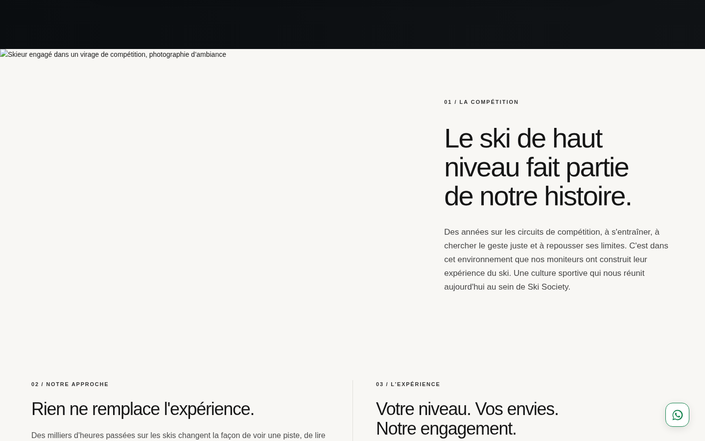
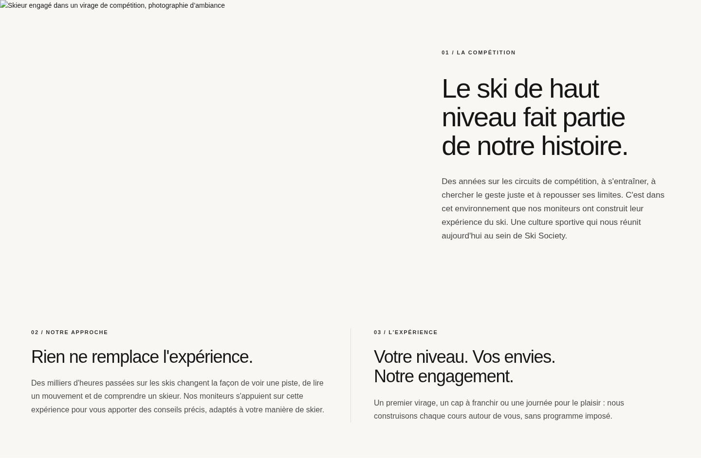
Viewport 1280 × 800
Capture exacte du viewport · Section entière
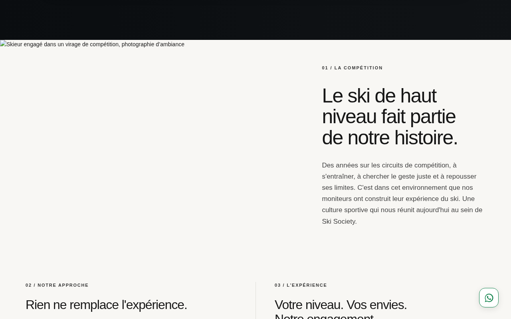
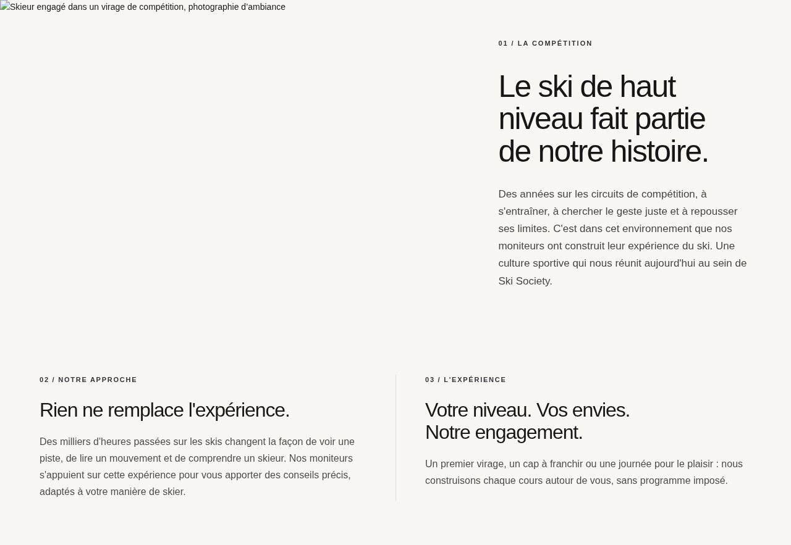
Viewport 1024 × 768
Capture exacte du viewport · Section entière
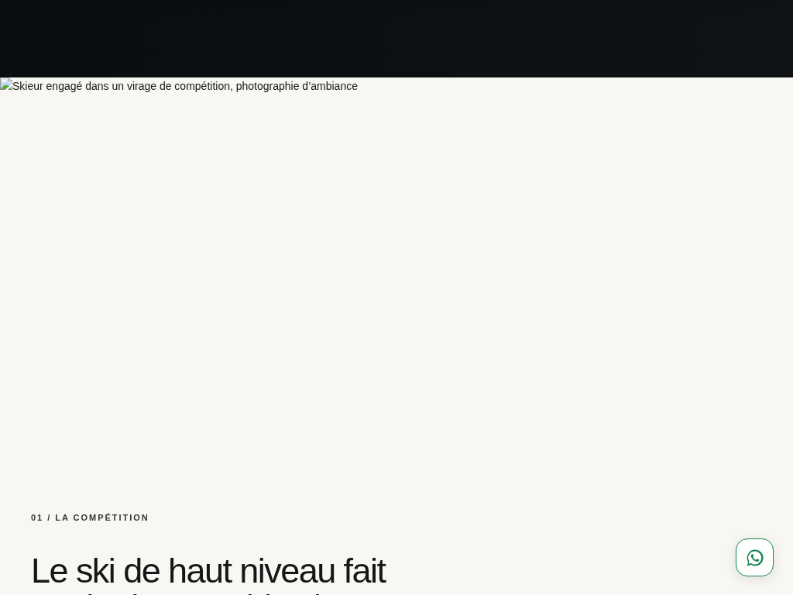
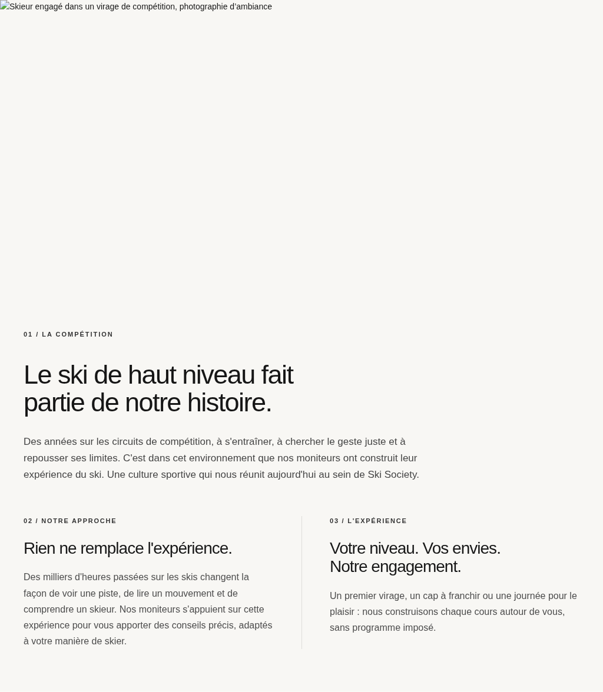
Viewport 768 × 1024
Capture exacte du viewport · Section entière
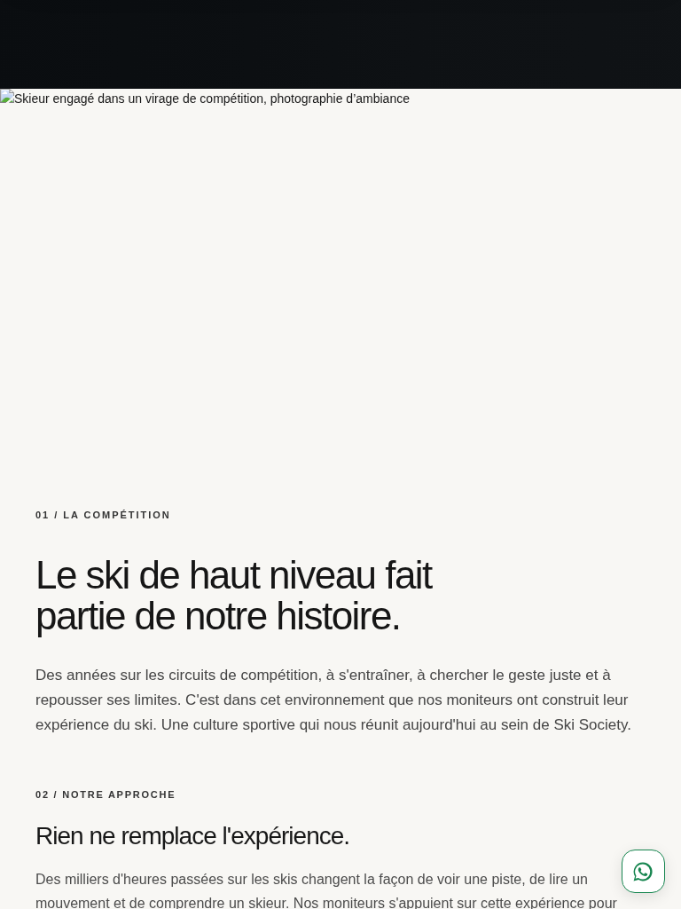
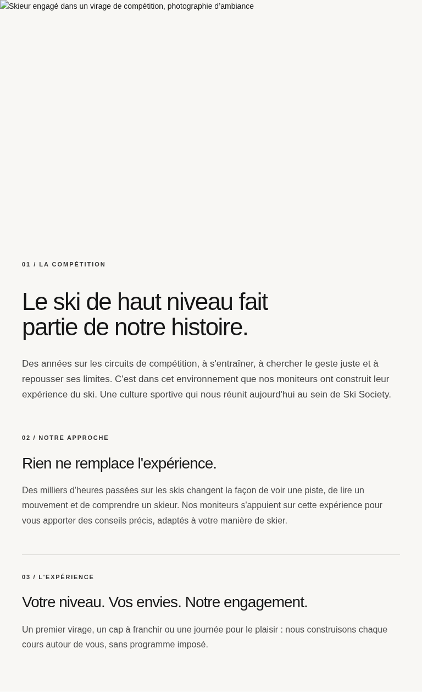
Viewport 390 × 844
Capture exacte du viewport · Section entière
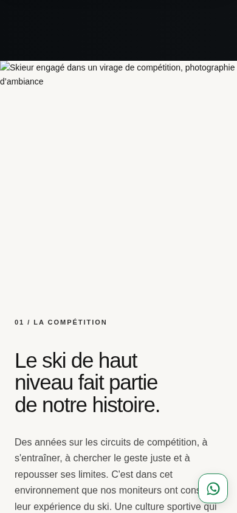
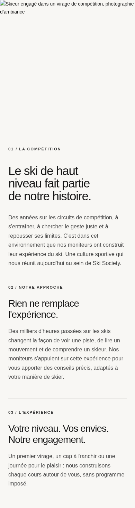
Comparaison avec la composition précédente
Les hauteurs diffèrent volontairement : le sommet photographique est désormais une composition continue plus basse et la bande inférieure lui succède immédiatement.
1440 px

1024 px
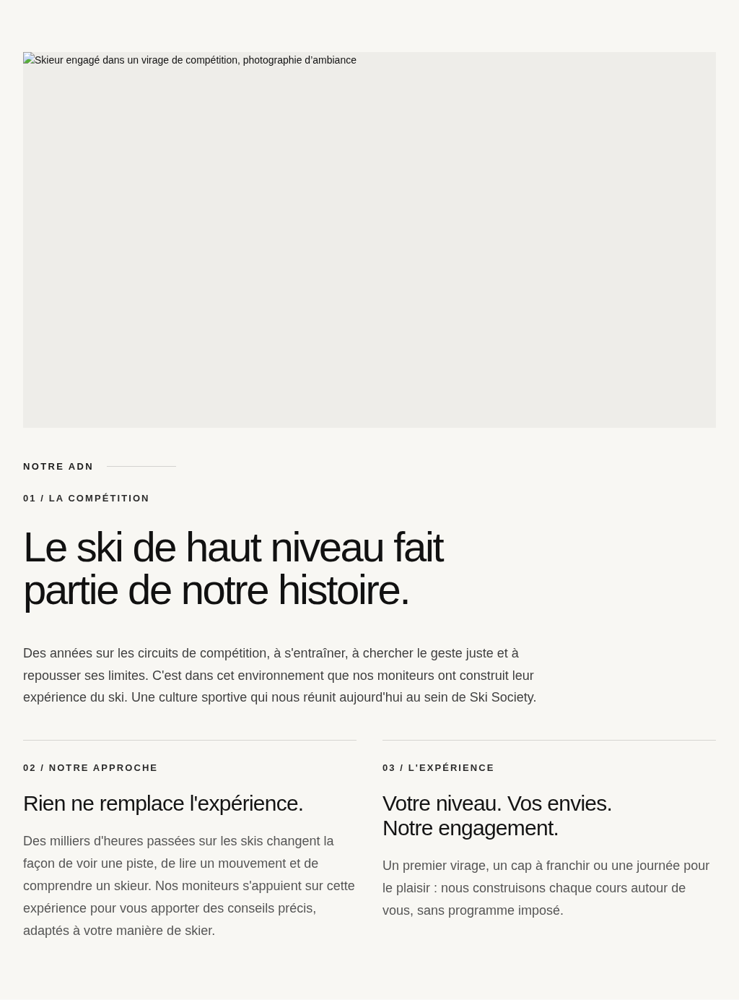